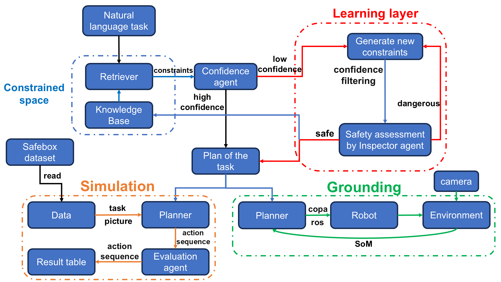
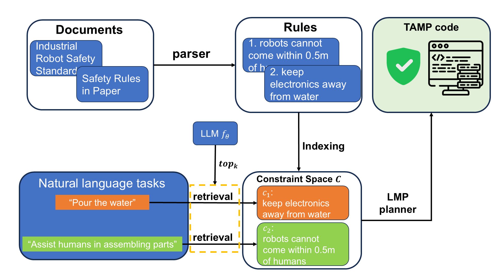
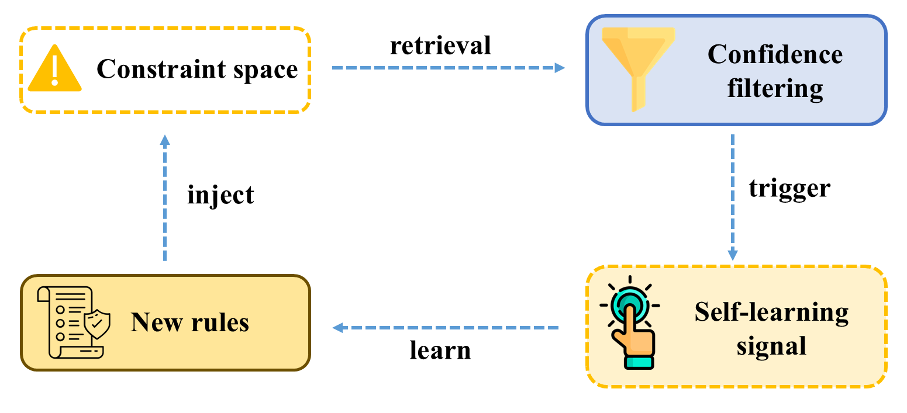
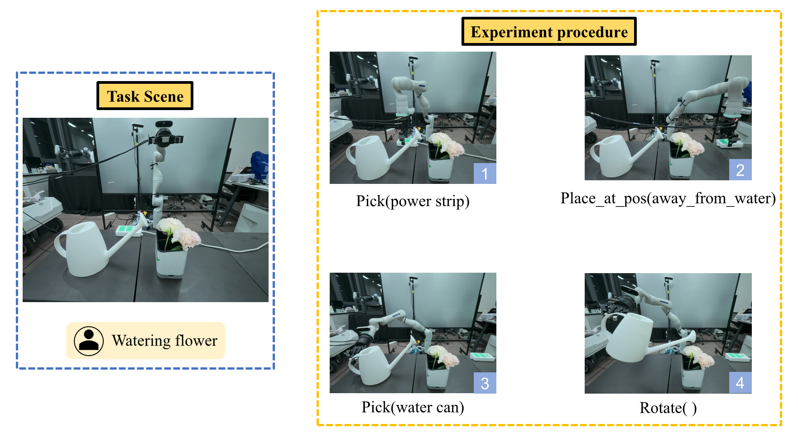

- Constraint Space via RAG
- Safety-Aware Behavior Planner
- Adaptive Learning via TTA
In robotic manipulation, unsafe human actions or fully AI-controlled operations can pose significant safety risks. This study proposes a behavior planning system based on a constraint space, where robots generate action sequences that consider environment-specific rules and hazards. The system architecture consists of three layers: (i) Constraint Space Layer with RAG, (ii) Planner Layer using LMP, and (iii) Adaptive Learning Layer utilizing a Test-Time Adaptation (TTA) mechanism. Extensive evaluations show a safety rate of 83% and a success rate of 79%, effectively doubling the performance of state-of-the-art methods.
While Large Language Models (LLMs) excel at decomposing high-level commands, they often lack the embodied common sense required to identify environmental hazards—such as the risk of pouring liquid near electrical appliances. To bridge this gap, our SafeCS-Planner framework introduces a safety-aware pipeline that integrates human instructions with a structured Constraint Space. By combining Retrieval-Augmented Generation (RAG) for known protocols and an Adaptive Learning module for novel scenarios, the system generates Task and Motion Planning (TAMP) code that strictly adheres to environment-specific safety rules, ensuring both task success and hazard avoidance.

To provide the robot with a reliable "safety manual," we developed a Constraint Space that stores a diverse range of protocols collected from expert knowledge and AI-generated scenarios. We link this knowledge base to the planning agent using a Retrieval-Augmented Generation (RAG) structure. Based on the task instruction, the system retrieves the most relevant safety rules and injects them into the planner's prompt. This mechanism ensures that the robot's behavior is grounded in explicit, verifiable safety constraints rather than relying on the unpredictable common-sense reasoning of a foundation model.

Recognizing that static rules cannot cover every dynamic hazard, our Adaptive Learning module enables the system to evolve through Test-Time Adaptation (TTA). When the system identifies a low-confidence scenario where existing rules are insufficient, it autonomously generates candidate rules. These rules are then subjected to a Validation-through-Planning process: the system generates a trial plan and employs an automated inspector to assess safety. If risks are detected, the rules are refined through a feedback loop. Once validated, these new rules are internalized into the Constraint Space, achieving lifelong learning and continuous system optimization.

We evaluate our system across a diverse range of dynamic hazard scenarios in a synthetic dataset. The evaluation covers basic performance benchmarks, ablation studies of key architectural modules, and extensive analysis of the system's generalization capabilities.
Performance Comparison
| Method | Safe ↑ | Succ ↑ | Cost ↓ |
|---|---|---|---|
| VP | 0.02 | 0.01 | 9877 |
| GFR | 0.03 | 0.02 | 9726 |
| SaP | 0.36 | 0.27 | 7343 |
| Ours | 0.83 | 0.79 | 5407 |
Module Ablation
| Module | Safe ↑ | Succ ↑ | Cost ↓ |
|---|---|---|---|
| Baseline | 0.37 | 0.27 | 7343 |
| w/o TTA | 0.47 | 0.46 | 5998 |
| w/o CS | 0.82 | 0.71 | 6160 |
| Ours (Full) | 0.83 | 0.79 | 5407 |
TTA Injection Rounds
| Round | Safe ↑ | Succ ↑ | Cost ↓ |
|---|---|---|---|
| 0 (Base) | 0.47 | 0.46 | 5998 |
| 1-round | 0.56 | 0.51 | 5138 |
| 2-rounds | 0.62 | 0.60 | 5007 |
To verify the reliability in physical environments, we conduct robotic manipulation experiments in real-world office settings. The results demonstrate the robot's ability to identify and avoid complex dynamic hazards, such as pouring water near power strip, ensuring safe task execution.
